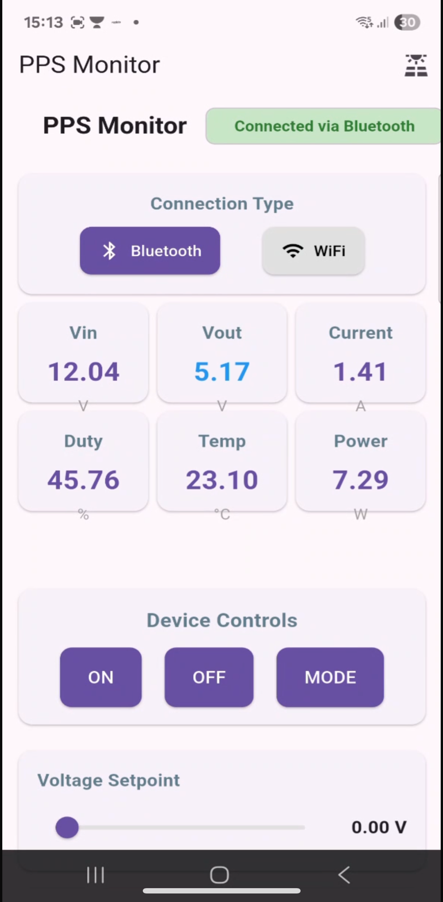

Built ESP32 display and Flutter interface prototypes for power-system telemetry, combining touch controls, rolling plots, BLE, and WebSocket communication.
ESP32Flutter / DartBLE · WebSockets
Purpose
Make power-system telemetry usable on embedded and mobile displays.
My contribution
ESP32 display prototypes, Flutter plotting and communications.
Tools
ESP32 · TFT · Flutter / Dart · BLE · WebSockets
Validation
Report and source document interface behavior. Public firmware uses simulated readings.

Original IIT Hyderabad report photograph and PPS Monitor screenshot
Engineering decisions
PROBLEM → DECISION → EVIDENCE
Keep displays usable
problem
Small screens and mobile plots need bounded histories and responsive updates.
decision
Use selective redraw on the TFT and rolling graph buffers in Flutter.
evidence
The report photographs and public plotting code show the interface work; simulated readings exercise the public telemetry firmware.
Technical notes & implementation details
The challenge
Make power-system information usable on small embedded screens and mobile devices: clear values, responsive graphs, and accessible controls across different communication paths.
My contribution
Built ESP32 TFT interfaces with selective redraw, debounced buttons, scrolling graph buffers, and touch calibration. Developed Flutter views for telemetry, graphing, and command interactions.
Implementation
The report describes W5500 Ethernet, Bluetooth Classic, BLE, and later Wi-Fi variants. The public Flutter code implements BLE discovery, WebSocket transport, six-field telemetry parsing, rolling plots, and control messages.
Evidence & limits
The public ESP32 firmware generates simulated readings and logs received commands. It demonstrates communications and interface behavior, not calibrated power measurements or physical closed-loop regulation. The touchscreen prototype also used a potentiometer as an analog input.
Original report screenshot: PPS Monitor graph interface. Displayed values are not presented as independently verified measurements. Open image for full resolution.
Actual Flutter source: keep a bounded history for each telemetry metric, then append a point to its plot. The companion public firmware supplies simulated readings. View original source ↗Read accessible code text